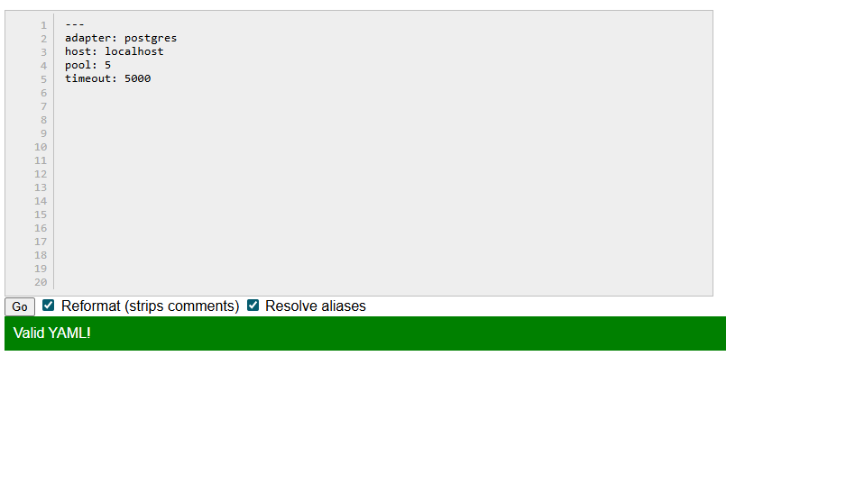
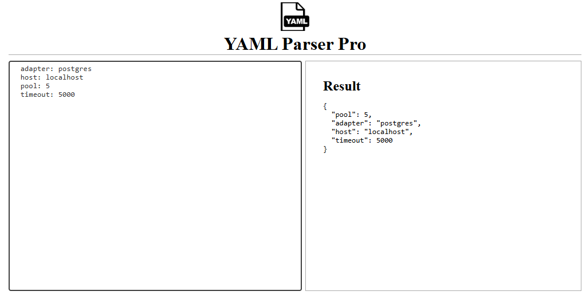
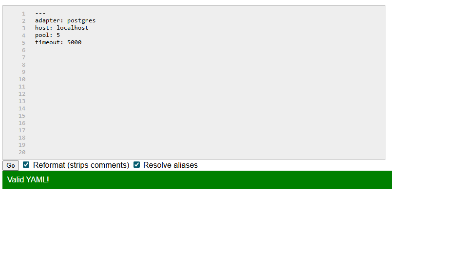
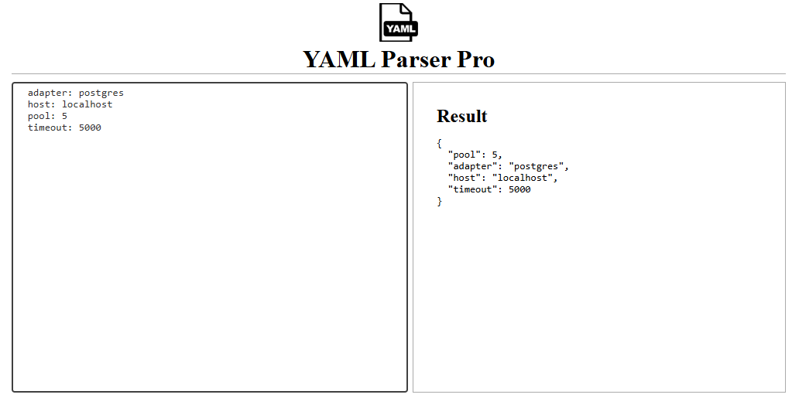

YAML is a human-friendly data serialization format used for configuration files, data exchange, and even API workflows. It’s known for being readable, clean, and structured with simple indentation-based syntax.
You don’t need to “install” YAML itself, but here are helpful tools and environments to work with YAML:
 


